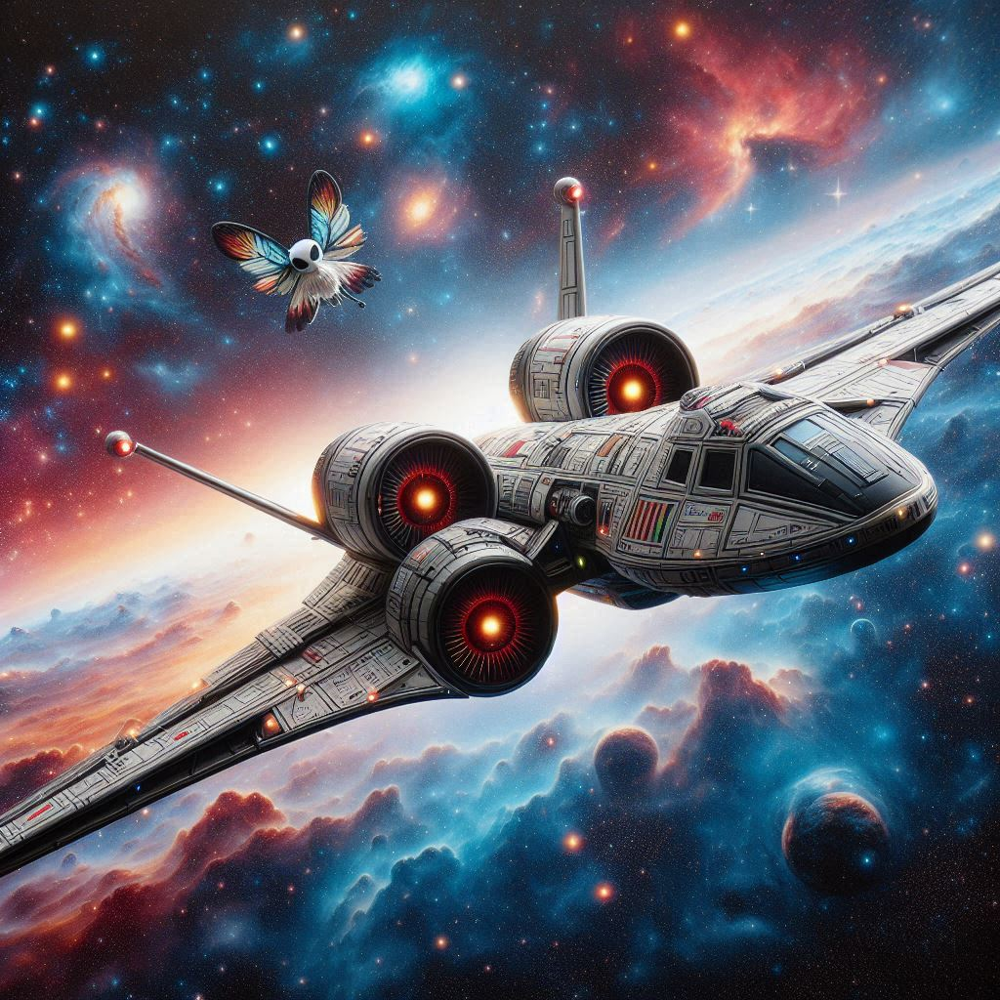

작가
베르나르 베르베르
출판일
2007년
감상평에 대한 AI그림
등장인물들이 파피용 비행선을 타고 새로운 지구를 향해 우주로 떠나는 내용으로 이야기 전개가 매우 흥미진진 하며 지루할 틈이 없었다.

감상평에 대한 AI평가
이 감상평은 다음과 같이 평가할 수 있습니다.
✨ ✨감탄과 경외: 파피용 비행선을 타고 새로운 지구로 떠나는 이야기에 흥미진진한 전개와 상상력을 자극하는 요소들에 감탄하며, 끝까지 집중하게 만든 매력적인 구성에 감동을 느꼈습니다.
✨ ✨공감과 내면적 성찰: 등장인물들의 우주 여행을 통해, 새로운 도전과 미지의 세계에 대한 갈망이 공감되며, 자신도 삶에서 새로운 시작을 향해 나아가고 싶은 욕구를 성찰하게 되었습니다.
✨ ✨진지함과 역사적 책임감: 우주로 떠나는 여행을 통해 인류의 미래와 새로운 가능성에 대한 진지한 고민이 담겨 있으며, 그 과정에서 선택의 중요성과 책임감을 되새기게 되었습니다.